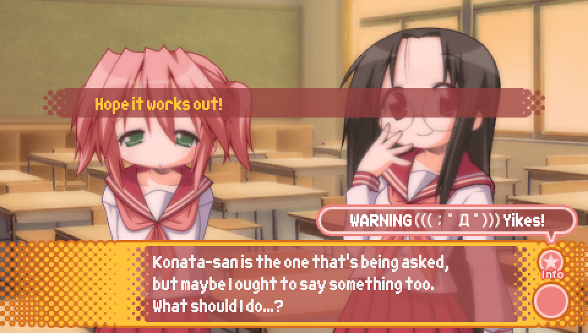

Episode 3: Lucky Star Universe |
Lucky Lucky Memorial Routes |
|
As you progress further into the game, opportunities to unlock additional routes
for Episode 1, Lucky Lucky Memorial, open up. Episode 3 offers two additional routes to unlock
with the following criteria:
- Ayano Lucky Lucky Memorial Route -- Run into Ayano and Misao on the way to school on the first day.
(Only possible after getting the good ending to Lucky Star Universe)
- Misao Lucky Lucky Memorial Route -- Get the good ending to Ayano's Lucky Lucky Memorial route.
More details on how to meet these criteria will be described further down.
|
|
This Episode has four mini scenarios you can unlock with the following unlock criteria:
- Hikage Mini Scenario -- Get the good ending to Lucky Star Universe
- Hinata Mini Scenario -- Get the good ending to Lucky Star Universe
- Ayano Mini Scenario -- Get the good ending to Ayano's Lucky Lucky Memorial Route
- Misao Mini Scenario -- Get the good ending to Misao's Lucky Lucky Memorial Route
How to get these good endings will be described further down.
|
Route Guide -- Episode 0 (Episode 3 Version) |
|
NOTE: As with the Episode 2 guide for Episode 0, if a choice that's present in this Episode is not
mentioned here, it's either because it has no impact on anything, or because the same choice
appeared in previous episode(s), and so has the same impact on things like character favorability
that it did in those previous episode(s).
|

- Stay calm and take my time -- Run into Yutaka and Minami, + ¥500
- Run as fast as I can -- Run into Patty
- Look up the school online -- Run into Hiyori
This choice determines which of the first year students the protagonist meets first and therefore who
will be the one(s) to recognize the protagonist after school on the first day during school festival preparations.
If you run into Yutaka and Minami.

If you run into Patty.

If you run into Hiyori.
|

This choice marks the point where you can either enter Episode 3 proper,
or continue along Episode 0, which you may wish to do if you're wanting to
replay previous Episodes.
- Can I help? -- enter Episode 3
- Hope it works out! -- continue with Episode 0
|
- Keep working -- replay Episode 1
- Call out to Kuroi Sensei -- continue with Episode 0
|

- It's just a prank -- continue with Episode 0
- Let's look for the culprits! -- replay Episode 2
Note that there is a special segment of Unlucky★Sisters in Episode 0 that is only viewable at this point in the game,
so make sure to replay Episode 0 if you want to see it.
|

- Check out the store -- buy trading cards with the Episode 0 distribution
- Forget about it -- don't buy trading cards
Note that by seeing this choice, you unlock the ability to go to the Trading Card Shop in Episode 1.
Additionally, as a reminder, the trading card distribution for Episode 0
is that each of the 40 trading cards have a 2.5% chance of appearing (see the Episode 2 guide for more details).
|

As mentioned earlier, this is the Unlucky★Sisters segment that's only viewable at this point in the game.
Once you have gotten the good ending for Episode 3 at least once, this segment will no longer be viewable
on your current save file, so make sure you don't miss it!
After this segment is over, the rest of Episode 0 plays out the same as in Episode 2's version.
As described in the Episode 2 guide, you can try to get the phone calls from each of the main 4
on the night before the school festival by making sure that you have the most favorability with
the character you want to get the phone call from.
|
Route Guide -- Lucky Star Universe |
|
Starting with Episode 3, whether or not you get a good or bad ending starts to depend on
obtaining enough "clear points", which you get by picking the right choices throughout the route.
A notable difference between clear points and character favorability is that there is no
sound effect that plays when you select a choice that gives you clear points. This can make getting
a good ending difficult without a guide, so that's where this guide comes in!
|

- They actually are broken -- no effect
- A cable is unplugged -- clear points + 1
- The power is out -- no effect
|

- We have no choice -- clear points + 1
- Give up...? -- no effect
- Let's buy new PCs! -- no effect
|

- Watch the netgame -- see Kagami scene later
- We better go home -- see Miyuki scene later
- Test the PCs myself -- see Minami scene later
Beyond the immediate aftermath of picking these choices, the scene that follows this one will differ
depending on which choice you make, with it involving Kagami, Miyuki, or Minami.
|

- Wake her up with a kiss! -- no effect
- Call out to her -- no effect
- Sit her up -- clear points + 1
Note that you will only see this scene if you picked "Watch the netgame" for the previous choice.
|

- Let's look for everyone -- clear points + 1
- Let's be like Adam and Eve! -- no effect
- Let's call them on our cellphones -- no effect
Note that you will only see this scene if you picked "We better go home" for the previous choice.
|

- Let's wait here -- no effect
- Let's go look for her! -- clear points + 1
- Did you try calling her? -- no effect
Note that you will only see this scene if you picked "Test the PCs myself" for the previous choice.
|

- Even if you say so... -- no effect
- I'll taste test it for poison! -- clear points + 1
- Kagami-san, go ahead! -- no effect
|

- You're charging money for this? -- no effect
- This is really suspicious... -- no effect
- What kind of drug is this? -- clear points + 1
|

- Stop Iwasaki-san -- no effect
- Go with Iwasaki-san -- clear points + 1
- See what the Dark Lord will do -- no effect
|

- Victory goes to the one who acts first! -- no effect
- Strategic retreat! -- no effect
- Wait for her to make a move -- clear points + 1
|

- And what's your proof? -- clear points + 1
- I don't believe it! -- no effect
- So it's all your fault!? -- no effect
|

- Good luck with that! -- no effect
- Mind if we help you? -- clear points + 1
- Where's Tsukasa-san? -- no effect
|

- Could it be a scam? -- no effect
- Is she actually a monster? -- no effect
- Does that drug even work? -- clear points + 1
|
Lucky Star Universe -- Chaos in the Castle Hall Scene |

Once the Dark Lord breaks up Chun's meeting and throws the castle hall into chaos,
there are a sequence of choices that cause the scene to play out in several different ways.
However, it ultimately breaks down to two main choices. The first is which group the protagonist goes with,
which can be one of the following options.
- Konata's group, consisting of Konata, Kagami, and eventually Tsukasa as well
- Miyuki's group, consisting of Miyuki, Yutaka, and Minami
- The protagonist by himself
The second is which of the two endings you get for this scene, which will result in you getting a different scene
following this one.
- The party successfully escapes from the castle hall (Ending A)
- The protagonist and some of the other party members are arrested by Chun's henchmen (Ending B)
I will be describing the outcomes of the following choices in terms of these two main choices.
Note that some of these choices will give you clear points, but ultimately, regardless of the ending you get
from this scene, it won't lock you out of getting a particular ending in the episode overall so long as you
earn the necessary number of clear points once the time comes.
|

Choice 1:
- Lay low for now! -- Konata's group goes to rescue Tsukasa without the protagonist,
go to Choice 2
- Rescue Tsukasa-san! -- clear points + 1, Konata's group goes to rescue Tsukasa with the protagonist,
go to Choice 4
|

Choice 2:
- Retreat to the back -- protagonist joins Miyuki's group,
go to Choice 3
- Lie in wait -- protagonist stays by himself,
get Ending B.
- Catch up to Konata-san and Kagami-san -- protagonist joins Konata's group on their way to rescue Tsukasa
go to Choice 5
|

Choice 3:
- Alright, let's do it! -- clear points + 1, get ending A
- Hmm... -- clear points + 1, get ending B
- It's not worth the risk -- get ending B
|

Choice 4:
- Leave it to me! -- clear points + 1, rescue Tsukasa,
go to Choice 5
- Leave it to Konata-san! -- rescue Tsukasa,
go to Choice 5
- Leave it to Kagami-san! -- clear points + 1, rescue Tsukasa,
go to Choice 5
|

Choice 5:
- Ask Konata-san for a plan -- clear points + 1, get Ending A
- Ask the Dark Lord for a plan -- clear points + 1, get Ending A
- Figure something out myself -- get Ending B
|
Lucky Star Universe -- Chaos in the Castle Hall Ending A: Successful Escape |

- ...You make a living off doujinshi? -- clear points + 1
- Guys, I know it's been on the rise lately, but... -- no effect
- Do you have trouble going outside? -- no effect
|
Lucky Star Universe -- Chaos in the Castle Hall Ending B: Arrested by Chun's Henchmen |

- I'm sure we'll be alright! -- clear points + 1
- Let's think of ways to escape -- clear points + 1
- ..We'll be tortured? -- no effect
|
Lucky Star Universe -- Underground Labyrinth |

When the cast enters the secret underground labyrinth, you as the player are made to guide the protagonist
through the maze. This part can be tricky for many players, and it'd be very difficult to offer advice purely
through text and screenshots, so I have created the below map to help you get through. The map also will help
you in finding all of the labyrinth's secrets!
A few things to note, though, that I couldn't easily include in the map.
The first is about how you move about the labyrinth.

Only "move forward" will actually take you to a new tile in the maze. The other options merely change which
direction you are facing on the tile you are currently on. Also remember that turning left, right, or around
are relative to the current direction the protagonist is facing. Use the facing direction the game offers
in combination with the cardinal directions as indicated by the map to pick the right choice.
Second, just to make this clear, the special locations labelled with red, blue, and yellow squares on the map
are placed on the sides of the tiles to indicate that you have to both be on that tile and face in that
direction in order to trigger the event.
Lastly, the third thing to note is that going to the Trading Card Shop hidden within the labyrinth
does not unlock the Trading Card Shop for Episode 1, as this is technically not the same Trading Card Shop
that the protagonist can visit in Episode 1, and it's that shop you have to visit once in order to unlock it
in Episode 1. Additionally, this Trading Card Shop will have the Episode 3 card distribution, which as a reminder
has a 9.0% chance to pull cards 15-21, and a 1.1% chance for all other cards.
|

|
Lucky Star Universe -- Ending Sequence |
|
After the underground labyrinth, you enter into the ending sequence of Lucky Star Universe,
in which the ending you get is determined. There are three different bad endings you can get,
corresponding with the three checks you have to clear in order to get the good ending.
Fail any of these checks, and you'll be given its corresponding bad ending. What these checks
are and how to clear them is described down below.
Additionally, there is only one good ending to Lucky Star Universe, and you have to get it
in order to progress further into the game. If you get one of the bad endings instead,
Episode 0 will stay in the Episode 3 state and nothing new will be unlocked.
You will have to keep replaying the Lucky Star Universe route until you get the good ending.
|

Upon escaping from the underground labyrinth, the cast will be trying to come up with a strategy
to defeat Chun and her henchmen when the above line will appear of the protagonist thinking.
If you have at least 7 clear points upon reaching this line, you will pass the first check
and Konata will suddenly think of an ally that could help, but needs Sunny and Shadow's help to contact them.
It is only after Konata gets Sunny and Shadow to agree to the plan that the protagonist steps on a trap
that causes the cast to fall into the castle hall.
If you have 6 or fewer clear points upon reaching this line, the protagonist will step on
a trap that causes the cast to fall into the castle hall before anyone can think of a plan
and you will get the first bad ending.
|

- Leave it to me! -- clear points + 1, pass the second clear check.
- You expect me to use this!? -- get the second bad ending.
When Chun summons a horde of minions with her transmutation abilities, the Dark Lord offers
the protagonist her rarest drop in order to help defeat them: The King of Gamblers' Sword.
You are then given a choice that represents the second check to get the good ending.
Passing the check is simple, just have the protagonist accept the King of Gamblers' Sword.
Otherwise, you will get the second bad ending.
|


Upon reaching these lines where the Dark Lord tells Chun that talking too long has done her in,
the third and final check is performed.
If you have at least 10 clear points upon reaching these lines, Gamemaster Luminous
will show up and you will get the good ending.
If you have 9 or fewer clear points upon reaching these lines, Gamemaster Luminous
won't show up and you will get the third bad ending.
|
Route Guide -- Lucky Lucky Memorial (Episode 3 Routes) |

Once you've gotten the good ending to Lucky Star Universe and Episode 0 has entered the Episode 4 state,
you will be given an opportunity to access the Ayano and Misao Lucky Lucky Memorial routes.
Something that is very important to note is that to unlock the Ayano Lucky Lucky Memorial route,
you have to set a flag that is only possible to set at two points in the game:
when Episode 0 is in the Episode 4 state, and when Episode 0 is in the Episode 7 state.
If you don't set this flag before getting the good ending to Episode 4, you won't be able to
set this flag until you have reached Episode 7. Because getting the good ending to
Ayano's Lucky Lucky Memorial route is a pre-requisite to playing Misao's Lucky Lucky Memorial route,
not unlocking Ayano's route also locks you out of Misao's route until Episode 7.
In order to set the flag that unlocks Ayano's Lucky Lucky Memorial route,
you have to have run into Misao and Ayano on the way to school on the first day,
which can be done by picking "My imagination" for the above choice.

By picking that choice, you'll see the above scene with Ayano and Misao.
It's by seeing this scene that the Ayano flag is set. The Ayano flag will then stay set permanently
on that specific save file provided you don't reload or quick load the save to a point before
picking this choice and then pick something else.
If you miss this scene, the game will give you a chance to view a similar scene in the Episode 7
version of Episode 0, which also sets the Ayano flag. However, the Episode 5 and Episode 6 versions
of Episode 0 do not have any way of setting the Ayano flag, so be careful.
|


If the protagonist ran into Ayano and Misao on the way to school on the first day
in the current time loop, the two will recognize the protagonist when they are properly introduced
during play practice on the second day. Note that you won't see this interaction if you
have the Ayano flag set from a previous time loop, but didn't run into them in this specific time loop.
|

When you reach this choice, pick "Keep Working" to replay Episode 1.
|

- What did you think, Konata-san? -- Konata favorability + 2
- What did you think, Kusakabe-san? -- Misao favorability + 2
- I don't know, really... -- no effect
If you're aiming for the Ayano route, you'll want to pick "I don't know, really..."
so you don't raise Konata's favorability.
If you're aiming for the Misao route, you'll want to pick "What did you think, Kusakabe-san?".
Additionally, note that the choice "What did you think, Kusakabe-san?" only appears if you have
gotten the good ending to Ayano's Lucky Lucky Memorial route on the current save file.
|

- And if I said no? -- no effect
- Ask a first year student -- go to choice of first year student to ask
- Yes, Miyuki-san -- Miyuki favorability + 2
- What do you think, Tsukasa-san? -- Tsukasa favorability + 2
You'll want to pick "And if I said no?" so you don't raise anyone's favorability.
Note that the choice "Ask a first year student" will only appear if one of the first year
students' routes is unlocked. If you have only gotten the Kou good ending to Comic Festival,
this choice won't appear for you.
|

- Minegishi-san, change the script! -- Ayano favorability + 2
- Kusakabe-san, switch places with me! -- Misao favorability + 2
- Let's find another way -- no effect
- Okay -- Konata favorability + 2
If you're aiming for the Ayano route, you'll want to pick "Minegishi-san, change the script!".
If you're aiming for the Misao route, you'll want to pick "Kusakabe-san, switch places with me!".
Note that "Minegishi-san, change the script!" will only appear if the Ayano flag is set (see above for details).
Note that "Kusakabe-san, switch places with me!" will only appear if you have gotten the good ending
to the Ayano Lucky Lucky Memorial route on this save file.
|

It's at this moment that the route you get is decided.
For whoever has the most favorability, you'll end up on that character's route and you'll be given
+4 favorability for that character. So that's +4 Ayano favorability in the Ayano route,
and +4 Misao favorability in the Misao route.
In the case of a tie, for the ties that are possible so far,
the order of priority is Konata > Tsukasa > Miyuki > Misao > Ayano > everyone else.
|
Route Guide -- Lucky Lucky Memorial (Ayano Route) |

Before the protagonist leaves his house to go to school on the first morning
of this route, he'll take some extra money to pay for food.
This will add 1000 yen to your total amount of money, which you can spend on trading cards.
|

- If it's from someone I like, anything's good -- Ayano favorability + 2
- Of course -- no effect
- It doesn't really matter -- no effect
|
|

- Enter the store -- buy trading cards with the Episode 1 distribution
- I don't have time for that -- don't buy trading cards
Note that this choice will only appear if you've been to this trading card shop before.
Additionally, as a reminder, the trading card distribution for Episode 1
is that there is a 9.0% chance for cards 1-7 and a 1.1% chance for all other cards.
|
|

This scene after Konata gets mad at the protagonist and storms out of
play practice contains the first check you have to pass to get the good ending.
To pass the check, you need at least 8 favorability points with Ayano.
If you pass the check, you will see the above line and the following interaction
where Kagami comes to the realization that the protagonist has a crush on Ayano.
If you fail the check, the scene will play out a bit differently.
|
|

- Talk about anime -- Konata favorability + 2
- Talk about manga -- no effect
- Talk about video games -- no effect
|
|

- What do you think we should do? -- no effect
- There's someone I'm interested in -- Ayano favorability + 2
- We'll kiss -- no effect
|
|

This moment near the end of the scene with Konata on the night before the school festival
contains the second and final check you have to pass to get the good ending.
To pass the check, you need at least 10 favorability points with Ayano and to have passed the previous check.
If you pass the check, the protagonist will stop Konata before she leaves in order to ask her to meet with him
tomorrow to talk about his plans to confess to Ayano.
If you fail the check, the protagonist will not stop Konata and the scene will play out a bit differently.
The following day, you'll get the Lucky Lucky Memorial bad ending.
|
Route Guide -- Lucky Lucky Memorial (Misao Route) |

Before the protagonist leaves his house to go to school on the first morning
of this route, he'll take some extra money to pay for food.
This will add 500 yen to your total amount of money, which you can spend on trading cards.
|
|

- Sorry... -- no effect
- It's lunch break right now -- no effect
- See for yourself after school -- Misao favorability + 2
|
|
- Enter the store -- buy trading cards with the Episode 1 distribution
- I don't have time for that -- don't buy trading cards
Note that this choice will only appear if you've been to this trading card shop before.
Additionally, as a reminder, the trading card distribution for Episode 1
is that there is a 9.0% chance for cards 1-7 and a 1.1% chance for all other cards.
|
|

This scene after Konata gets mad at the protagonist and storms out of
play practice contains the first check you have to pass to get the good ending.
To pass the check, you need at least 8 favorability points with Misao.
If you pass the check, you will see the above line and the following interaction
where Misao admits to the protagonist that she doesn't hate him.
If you fail the check, the scene will play out a bit differently.
|
|
- Talk about anime -- Konata favorability + 2
- Talk about manga -- no effect
- Talk about video games -- no effect
|
|

- Rub her back -- Misao favorability + 2
- Console her -- no effect
- Do nothing -- no effect
|
|

This moment near the end of the scene with Misao on the night before the school festival
contains the second and final check you have to pass to get the good ending.
To pass the check, you need at least 10 favorability points with Misao and to have passed the previous check.
If you pass the check, Misao will call the protagonist just as he's about to leave the gymnasium to ask him
to meet with her tomorrow after the play.
If you fail the check, this moment simply won't happen and the scene will end on the line immediately before this.
The following day, you'll get the Lucky Lucky Memorial bad ending.
|
|